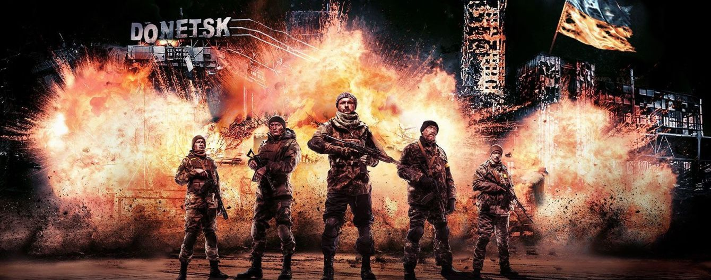

Сергийчук Алла Сергеевна
Почему выбрали фронтенд?
- Хочу научиться верстать сайты
- Нравится создавать красивые веб-страницы
- Фронтенд-разработчик - интересная профессия
Ссылка на ваш любимый сайт
Мой любимый сайт - YouTube
Расскажите немного о себе:
Чего ожидаю от курса:
Мои любимые фильмы:
-
«Варкрафт» (англ. Warcraft) — приключенческий фильм-фэнтези, действие которого происходит в вымышленной вселенной Warcraft, представленным в одноимённой серии компьютерных игр
-
«Сталингра́д» — российская военная драма режиссёра Фёдора Бондарчука; первый российский кинофильм, снятый в формате IMAX 3D. Картина рассказывает об одном событии Сталинградской битвы во время Великой Отечественной войны — обороне стратегически важного дома.
-
«Петля времени» (англ. Looper) — научно-фантастический фильм режиссёра Райана Джонсона о путешествиях во времени. В главных ролях — Брюс Уиллис, Джозеф Гордон-Левитт и Эмили Блант.
Посмотреть фильм можно по ссылке:

-
 «Киборги» — полнометражный художественный фильм режиссёра Ахтема Сеитаблаева о боях в Донецком аэропорту, во время вооружённого конфликта в Донбассе. Фильм снят по оригинальному сценарию Натальи Ворожбит. Кинолента является одним из победителей 8-го конкурсного отбора Госкино Украины и получила государственную финансовую поддержку в 50 % себестоимости фильма в размере 24 миллионов гривен. Общая стоимость фильма оценивается почти в 48 млн гривен. Премьера кинокартины на Украине состоялась 6 декабря 2017 года — в День Вооружённых сил Украины. Съёмки начались 9 февраля 2017 года[4]. Съёмочная площадка находилась в селе Крюковщина Киевской области[5]. Часть материала была отснята в Черниговской области: на Гончаровском полигоне воссоздали сцены танковых боев, а на взлётно-посадочной полосе запасного Черниговского аэродрома — экстерьер аэродрома[6]. Консультантом ленты выступил Кирилл Недря (позывной «Доцент») — один из украинских военных, участвовавших в обороне донецкого аэропорта. Преподаватель Днепропетровского университета внутренних дел Кирилл Недря получил контузию в терминале аэропорта незадолго до того, как его покинул[7]. Съёмки завершились в апреле 2017, после чего начался этап монтажа. Фильм рассказывает историю одного двухнедельного боевого дежурства в сентябре 2014 года. Группа украинских военных впервые приезжает в повреждённое боевыми действиями здание старого терминала Донецкого аэропорта им. Сергея Прокофьева. Доброволец с позывным «Мажор» (играет Макар Тихомиров), музыкант и сын влиятельных родителей, тайком убежал на войну. Он пытается понять свою роль на этой войне, саму войну, и что будет после неё. Вместе с ним ещё шестеро военных, чьими прототипами являются реальные защитники аэропорта.